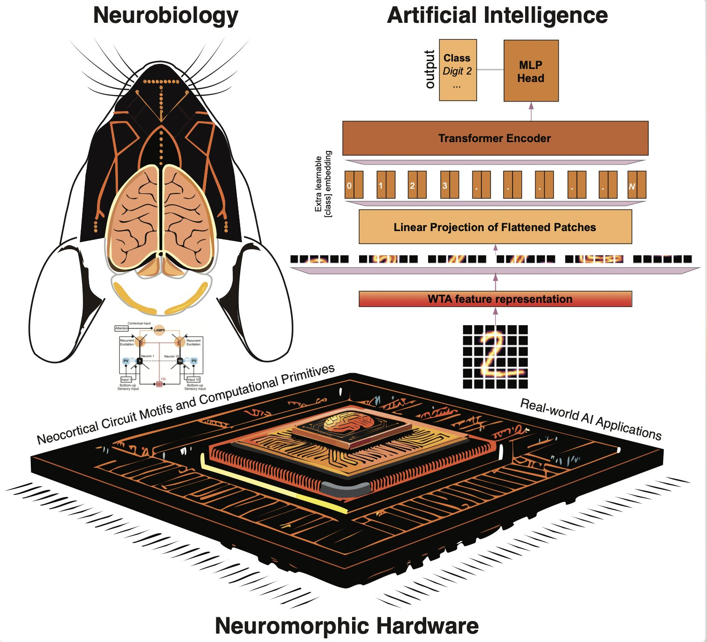

<!-- Start: Featured Research Component -->
<section class="section bg-black">
  <div class="container">
    <div class="max-w-3xl mx-auto text-center mb-16">
      <h2 class="mb-6">Research</h2>
      <!-- <p class="text-deepmind-gray-300">Our interdisciplinary team combines expertise in AI, medicine, and data science to create transformative healthcare solutions</p> -->
    </div>
    
    <div class="grid grid-cols-1 md:grid-cols-2 lg:grid-cols-3 gap-6">
      <!-- Research Card 1 -->
      <div class="card group">
        <div class="relative rounded-lg overflow-hidden mb-4 aspect-video">
          
        </div>
        <!-- <span class="inline-block px-3 py-1 bg-deepmind-blue/20 text-deepmind-blue rounded-full text-sm mb-3">Science</span> -->
        <h3 class="text-xl font-semibold mb-2">An Enhancer-AAV Toolbox for Interneuron Subtypes</h3>
        <p class="text-deepmind-gray-300 mb-4">We
          established a set of enhancer-AAV tools that are highly specific for distinct cortical interneuron populations
          and striatal cholinergic neurons.</p>
        <a href="https://www.cell.com/neuron/pdf/S0896-6273(25)00349-6.pdf" target="_blank" class="text-deepmind-blue hover:underline font-medium inline-flex items-center">
          Learn more
          <svg xmlns="http://www.w3.org/2000/svg" class="h-4 w-4 ml-1" viewBox="0 0 20 20" fill="currentColor">
            <path fill-rule="evenodd" d="M12.293 5.293a1 1 0 011.414 0l4 4a1 1 0 010 1.414l-4 4a1 1 0 01-1.414-1.414L14.586 11H3a1 1 0 110-2h11.586l-2.293-2.293a1 1 0 010-1.414z" clip-rule="evenodd" />
          </svg>
        </a>
      </div>
      
      <div class="card group">
        <div class="relative rounded-lg overflow-hidden mb-4 aspect-video">
          
        </div>
        <!-- <span class="inline-block px-3 py-1 bg-deepmind-teal/20 text-deepmind-teal rounded-full text-sm mb-3">Research</span> -->
        <h3 class="text-xl font-semibold mb-2">Biologically Realistic Computational Primitives of Neocortex Implemented on Neuromorphic Hardware Improve Vision Transformer Performance</h3>
        <p class="text-deepmind-gray-300 mb-4">Implementation of biologically-inspired neocortical computational primitives on neuromorphic hardware to enhance Vision Transformer architectures, bridging neuroscience principles with advanced AI performance.</p>
        <a href="https://www.biorxiv.org/content/10.1101/2024.10.06.616839v1.full.pdf" target="_blank" class="text-deepmind-blue hover:underline font-medium inline-flex items-center">
          Learn more
          <svg xmlns="http://www.w3.org/2000/svg" class="h-4 w-4 ml-1" viewBox="0 0 20 20" fill="currentColor">
            <path fill-rule="evenodd" d="M12.293 5.293a1 1 0 011.414 0l4 4a1 1 0 010 1.414l-4 4a1 1 0 01-1.414-1.414L14.586 11H3a1 1 0 110-2h11.586l-2.293-2.293a1 1 0 010-1.414z" clip-rule="evenodd" />
          </svg>
        </a>
      </div>

      <!-- Research Card 2 -->
      <div class="card group">
        <div class="relative rounded-lg overflow-hidden mb-4 aspect-video">
          
        </div>
        <!-- <span class="inline-block px-3 py-1 bg-deepmind-purple/20 text-deepmind-purple rounded-full text-sm mb-3">AI Systems</span> -->
        <h3 class="text-xl font-semibold mb-2">Segment AnyNeuron</h3>
        <p class="text-deepmind-gray-300 mb-4">Our framework can classify and segment unseen neuronal
          data by selecting the most representative samples, thus avoiding the
          cold-start problem faced in Active Learning.</p>
        <a href="https://www.biorxiv.org/content/biorxiv/early/2024/08/26/2024.08.24.609505.full.pdf" target="_blank" class="text-deepmind-blue hover:underline font-medium inline-flex items-center">
          Learn more
          <svg xmlns="http://www.w3.org/2000/svg" class="h-4 w-4 ml-1" viewBox="0 0 20 20" fill="currentColor">
            <path fill-rule="evenodd" d="M12.293 5.293a1 1 0 011.414 0l4 4a1 1 0 010 1.414l-4 4a1 1 0 01-1.414-1.414L14.586 11H3a1 1 0 110-2h11.586l-2.293-2.293a1 1 0 010-1.414z" clip-rule="evenodd" />
          </svg>
        </a>
      </div>
      
      <!-- Research Card 3 -->
      
    </div>
    
    <!-- <div class="mt-12 text-center">
      <a href="#" class="btn-secondary">View all research</a>
    </div> -->
  </div>
</section>
<!-- End: Featured Research Component -->